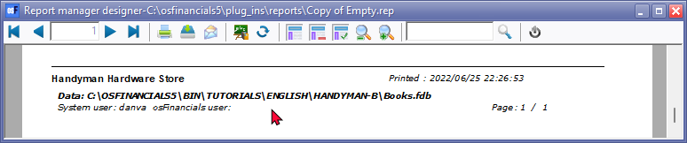
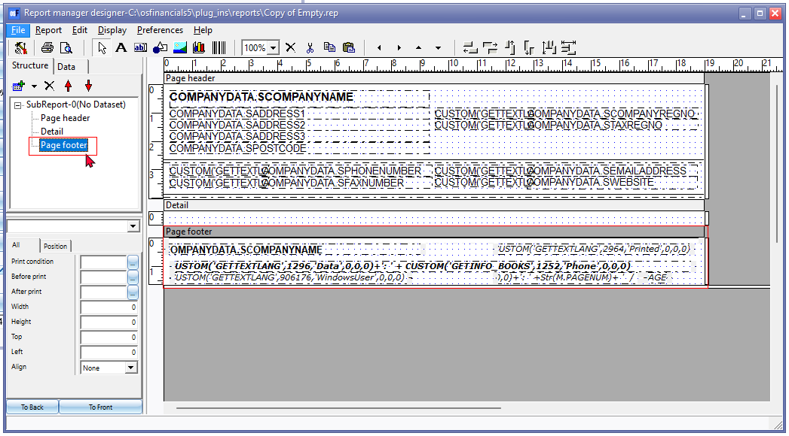
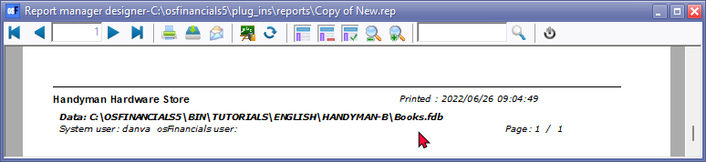

Reportman - Add footer data
The Data in the Page footers on the "Empty.rep" as well as all reports on the Reports menu and User reports menu; except on Document layout files and Debtor statements as well as on Creditor remittance advises, is as follows:
- Company name – In the case of multi page reports, where the company details (on Page header) is only printed on the first page of a report.
- Data – The full path (location and folders) in which the Set of Books is stored on your system or network.
- System user of your Operating system and the osFinancials user set in Setup → Access control (Setup ribbon) who printed the report.
- Date stamp – System date and time the report is printed.
- Page number and last page number to indicate the expected number of pages.
An example of the page footer, included in the "Empty.rep" is as follows:

Add data to Page footers
Select the "Empty.rep" or any other report and in the Page footer section of the report, select all the fields (including the Horizontal line).
Select the horizontal line and press the Shift key and while keeping the Shift key down, click on all fields.

The Page footer (as on the "Empty.rep" consists of the following expressions:
|
Expression |
SQL |
Description |
|
TRpShape2 |
Horizontal line |
Horizontal line |
|
TRpExpression17 |
COMPANYDATA.SCOMPANYNAME |
Company name – In the case of multi page reports, where the company details (on Page header) is only printed on the first page of a report. |
|
TRpExpression19 |
CUSTOM('GETTEXTLANG',1296,'Data',0,0,0)+': ' + CUSTOM('GETINFO_BOOKS',1252,'Phone',0,0,0) |
The data path – The full path (location and folders) in which the Set of Books is stored on your system or network. |
|
TRpExpression20 |
CUSTOM('GETTEXTLANG',906176,'WindowsUser',0,0,0) + ': ' + CUSTOM('GETINFO_WINUSER',2964,'User',0,0,0) +' '+CUSTOM('GETTEXTLANG',906177,'ProgramUser',0,0,0) + ': ' + CUSTOM('GETINFO_USER',2964,'Printed',0,0,0) |
System user of your Operating system and the osFinancials user set in Access control) who printed the report. |
|
TrpExpression18 |
CUSTOM('GETTEXTLANG',2964,'Printed',0,0,0) +' : ' + FORMATSTR('',now) |
Date stamp – System date and time the report is printed. |
|
TRpExpression21 |
+' '+CUSTOM('GETTEXTLANG',1024,'Page',0,0,0)+': ' +Str(M.PAGENUM)+ ' / ' |
Page number and last page number to indicate the expected number of pages. |
You may select the "Empty.rep" and copy all the expressions in the Page footer section and paste it in the footer section of your new report.
To copy the expressions to another report:
- Press the Shift key and use your mouse to click on the Expressions (including the Horizontal line)
- Select Edit → Copy (Alt+C) or press the (Alt+C) keys.
- Close the selected report to copy from. Do not save the report.
- Open the report on which you need to copy (add) the Page footer.
- Select the Page footer section of your report.
- Select Edit → Paste (Alt+V) or press the (Alt+V) keys.

You may need to resize the page footer vertically.
Click on the  Preview icon to check your report.
Preview icon to check your report.

|
|
Take note of the following important settings relating to page footers and multiple page reports: Force print setting - The Page footer may print on the first page only. It may not print on the last page or on consecutive pages, if it is a multi-page report. You need to set "Force print" to True Two pass report setting - This setting must be selected (ticked) for both, PAGECOUNT and/or SkipToPage settings. |